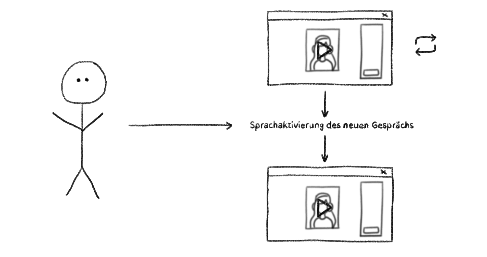
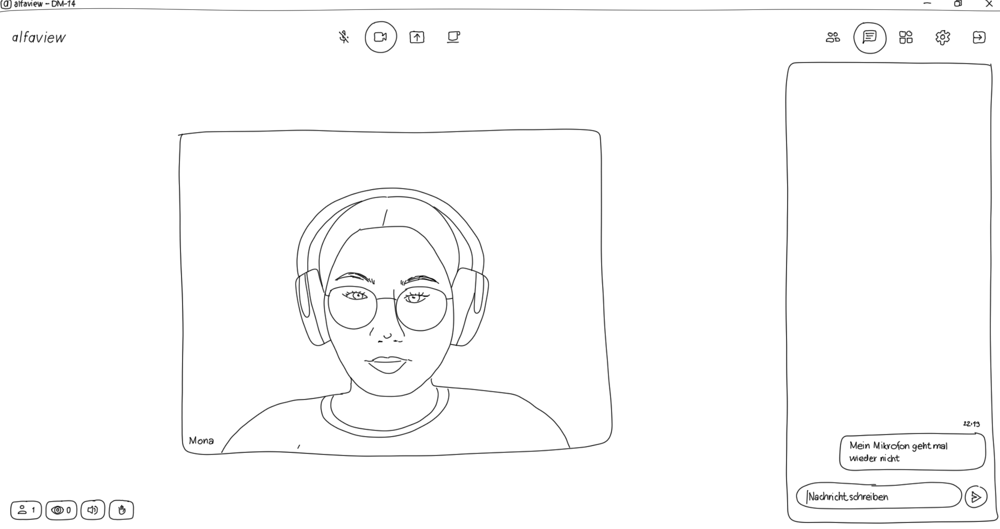

Idee
Unser Ziel war es, eine inhaltlich leere Onlinekommunikation darzustellen. Grund für die gescheiterte Online Sitzung sind typische Probleme von Online-Konferenz-Softwares, welche wir durch einen interaktiven Film visualisieren. Hierfür produzierten wir mehrere einzelne Videos als Screencasts in Alfaview (Software für Videokonferenzen, spezialisiert auf virtuelle Online-Meetings, Seminare, Unterrichtseinheiten und Konferenzen).

Nachdem das erste Video gestartet ist, gelangt die zuschauende Person durch eine Spracherkennung zum nächsten Video. Dafür wurde eine Auswahl an Wörtern spezifiziert. Sagen Rezipient*innen vor Ende des Videos nichts/nicht eins dieser Wörter, beginnt das Video von vorne. Die Protagonistin stellt Zuschauenden Fragen, welche leicht schlüssige Antwortmöglichkeiten bieten. Zum Beispiel: “Kannst du mich hören?”. Durch die Spracherkennung schaffen wir eine Simulation von einer Onlinesitzung, in der Zuschauende mit der Protagonistin im Video interagieren können.

Unser interaktiver Film simuliert, dass sich die Protagonistin und die zuschauende Person auf ein Onlinemeeting für eine gemeinsame Projektarbeit treffen.
Die Protagonistin schreibt in Video 3 während eines technischen Problems auch in den Chat. Die zuschauende Person kann mit der Spracherkennung darauf antworten.